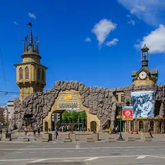

Подборку собрали 11 ноября, прошедшие события скрыты. Свежая афиша — на главной
Подборка · данные на 11 ноября
Куда сходить на свидание в Москве
Здесь 185 планов для двоих: прогулка, музей или шоу, а рядом — где поужинать, обычно не дальше 20 минут пешком. 51 план укладывается примерно в 1 500 ₽ на человека, 75 мы отметили как удачные для первого свидания. Ещё 78 событий на ближайшие две недели — концерты, спектакли и выставки, куда удобно сходить вдвоём. Понравился план — нажми «Позвать сюда»: соберётся приглашение-игра, а ответ с днём и временем вернётся к тебе.
- 185 планов
- 291 место
- 78 событий
Готовые планы для свидания 24 из 185
- Дом Пороховщикова · Деревянный терем · м. Арбатская
- 7 минут пешкомДом Мельникова · Архитектура
- 9 минут пешкомA-House Cafe · Кафе
Бревенчатый терем среди каменных домов, цилиндры Мельникова с ромбами окон и кофе на Афанасьевском — тихая сторона центра.
Открыть план: Арбатские переулки без АрбатаПозвать сюда: Арбатские переулки без Арбата
Фото: Lite, CC BY-SA 3.0 · Wikimedia Commons
- Большой театр · Театр · м. Охотный ряд
- 4 минуты пешкомМетрополь · Ресторан в историческом отеле
Спектакль на главной сцене страны, а через Театральную площадь — ужин в парадном зале «Метрополя» под витражным куполом с фонтаном.
Открыть план: Большой театр и ужин под куполомПозвать сюда: Большой театр и ужин под куполом
Фото: Юрий Д.К., CC BY 4.0 · Wikimedia Commons
- Театр Вахтангова · Театр · м. Смоленская
- 15 минут пешкомПанорама · Панорамный ресторан
Спектакль в Театре Вахтангова на Арбате, потом минут пятнадцать пешком до Смоленской — и ужин на 23-м этаже, где за окнами высотка МИД и огни Сити.
Открыть план: Вахтангов и ужин на 23-м этажеПозвать сюда: Вахтангов и ужин на 23-м этаже
Фото: A.Savin, Free Art License · Wikimedia Commons
- Останкинская башня · Смотровая площадка · м. Бутырская
- 4 минуты пешкомСедьмое небо · Ресторан на телебашне
Сначала смотровая Останкинской башни со стеклянным полом, потом столик во вращающемся «Седьмом небе»: пока ужинаете, под вами медленно проплывает вся Москва. Билеты и бронь — заранее.
Открыть план: Годовщина на 337 метрахПозвать сюда: Годовщина на 337 метрах
Фото: Klodklodklod77, CC BY-SA 4.0 · Wikimedia Commons
- Собор Непорочного Зачатия · Собор · м. Улица 1905 года
- 1 минута пешкомКафедра · Кофейня
Зайти в неоготический собор посмотреть витражи, а потом минута до тихой кофейни по соседству. Красивое место и спокойный разговор без дороги.
Открыть план: Готический собор и пирогПозвать сюда: Готический собор и пирог
Фото: A.Savin, Free Art License · Wikimedia Commons
- Дом-музей Пастернака · Музей · м. Боровское шоссе
- 10 минут пешкомДом творчества Переделкино · Литературный центр
- 1 минута пешкомБиблиотека · Ресторан
Дача Пастернака, прогулка среди сосен писательского городка и обед в «Библиотеке» с камином и книжными полками — почти загородный день, не уезжая из Москвы.
Открыть план: День в ПеределкинеПозвать сюда: День в Переделкине
Фото: Артём Белевич, CC BY-SA 4.0 · Wikimedia Commons
- Культурный центр ЗИЛ · Культурный центр · м. Автозаводская
- 13 минут пешкомStrEAT · Фудхолл
Лекция или кино в конструктивистском ДК ЗИЛ, а потом фудхолл StrEAT в корпусе завода «Динамо»: дагестанские хинкалы или баббл-ти — каждый берёт своё.
Открыть план: ДК ЗИЛ и уличная едаПозвать сюда: ДК ЗИЛ и уличная еда
Фото: NVO, CC BY-SA 3.0 · Wikimedia Commons
- Музей-квартира Достоевского · Музей · м. Достоевская
- 12 минут пешкомФудхолл «Дружба» · Фудхолл
Квартира, где прошло детство Достоевского, а через десять минут — фудхолл «Дружба»: рамен, утка по-пекински или малатан, порции большие, цены спокойные.
Открыть план: Достоевский и фудхолл «Дружба»Позвать сюда: Достоевский и фудхолл «Дружба»
Фото: Lesio, CC BY-SA 3.0 · Wikimedia Commons
- Парк «Зарядье» · Парк · м. Китай-город
- 10 минут пешкомСофия · Кофейня
Прогулка по парку и парящему мосту, затем десять минут через реку до кофейни с окнами на Кремль. Виды с обоих берегов за одну встречу.
Открыть план: Зарядье и кофе в колокольнеПозвать сюда: Зарядье и кофе в колокольне
Фото: Alina Vozna, CC BY-SA 4.0 · Wikimedia Commons
- Парк 40-летия Победы · Парк · Зеленоград — Крюково (МЦД-3)
- 27 минут пешкомBrunch Time · Кафе завтраков
Утренний круг вокруг пруда в главном парке Зеленограда, а потом Brunch Time, где драники, бенедикты и вафли с солёной карамелью подают весь день.
Открыть план: Зеленоград: пруд и завтрак весь деньПозвать сюда: Зеленоград: пруд и завтрак весь день
Фото: Sergey A. Demidov, CC BY 4.0 · Wikimedia Commons
- Ведогонь-театр · Театр · Зеленоград — Крюково (МЦД-3)
- 16 минут пешкомZiamo · Ресторан
Спектакль в «Ведогонь-театре» после реставрации, а потом ужин в Ziamo под живой джаз или соул — осьминог и авторские десерты.
Открыть план: Зеленоград: театр и джаз за ужиномПозвать сюда: Зеленоград: театр и джаз за ужином
Фото: Perituss, CC BY-SA 3.0 · Wikimedia Commons

- Московский зоопарк · Зоопарк · м. Баррикадная
- 11 минут пешкомКафедра · Кофейня
Погулять среди вольеров, пока светло, и за десять минут дойти до кофейни согреться. Простой план без пафоса, где легко найти темы для разговора.
Открыть план: Зоопарк и тёплая кофейняПозвать сюда: Зоопарк и тёплая кофейня
Фото: A.Savin, Free Art License · Wikimedia Commons
- Пионер · Кинотеатр · м. Выставочная
- 12 минут пешкомBamboo.Bar · Ресторан с террасой
Фестивальное кино на языке оригинала в «Пионере» на Кутузовском, а после сеанса — по мосту «Багратион» в Сити, ужинать на террасе Bamboo.Bar среди небоскрёбов.
Открыть план: Кино в «Пионере» и терраса в СитиПозвать сюда: Кино в «Пионере» и терраса в Сити
Фото: BpbAlonka, CC BY-SA 3.0 · Wikimedia Commons
- Клуб имени Русакова · Авангард Мельникова · м. Сокольники
- 12 минут пешкомСокольники · Парк
Три бетонных зуба зрительного зала над Стромынкой, а потом прогулка по аллеям Сокольников.
Открыть план: Клуб-шестерёнка Мельникова и СокольникиПозвать сюда: Клуб-шестерёнка Мельникова и Сокольники
Фото: Ludvig14, CC BY-SA 4.0 · Wikimedia Commons
- Московская консерватория · Концертный зал · м. Охотный ряд
- 1 минута пешкомMamie · Бистро
Классика в Большом или Малом зале консерватории — бывают недорогие билеты на балкон, — а через дорогу Mamie, светлое бистро в духе французского дома на юге.
Открыть план: Консерватория и французское бистроПозвать сюда: Консерватория и французское бистро
Фото: A.Savin, Free Art License · Wikimedia Commons
- Дом музыки · Концертный зал · м. Павелецкая
- 2 минуты пешкомCity Space · Панорамный бар
Классика, джаз или орган в Доме музыки, а потом лифт на 34-й этаж соседнего отеля: круглый бар City Space смотрит на реку на все 360°. Столы у окна не бронируют — идите сразу после концерта.
Открыть план: Концерт и бар на 34-м этажеПозвать сюда: Концерт и бар на 34-м этаже
Фото: Nevermind2, общественное достояние · Wikimedia Commons
- Сова · Кофейня · м. Волжская
- 27 минут пешкомУсадьба Люблино · Усадьба
Капучино за 150–350 ₽ в «Сове», куда можно с собакой, а потом прогулка к дворцу-ротонде и пруду усадьбы Люблино — на двоих выйдет дешевле одного ужина.
Открыть план: Кофе в «Сове» и Люблино с собакойПозвать сюда: Кофе в «Сове» и Люблино с собакой
Фото: NVO, CC BY 3.0 · Wikimedia Commons
- Перезвон · Кофейня в колокольне · м. Третьяковская
- 9 минут пешкомТретьяковка на Кадашёвской · Музей
Капучино под сводами колокольни XVIII века на Пятницкой, потом выставка в Третьяковке на Кадашёвской набережной.
Открыть план: Кофе в колокольне и КадашиПозвать сюда: Кофе в колокольне и Кадаши
Фото здания: Dmitry Ivanov., CC BY-SA 4.0 · Wikimedia Commons
- Красная площадь · Площадь · м. Площадь Революции
- 3 минуты пешкомBosco Cafe · Кафе с видом на Кремль
Красная площадь утром, пока нет толп и очередей, а с 9 часов — завтрак в Bosco Cafe в ГУМе, где окна смотрят прямо на Кремль.
Открыть план: Красная площадь до толп и завтракПозвать сюда: Красная площадь до толп и завтрак
Фото: mos.ru, CC BY 4.0 · Wikimedia Commons
- Здание Центросоюза · Модернизм Ле Корбюзье · м. Сретенский бульвар
- 2 минуты пешкомKeep · Гастробар
Единственное здание Корбюзье в России — розовый туф и стекло, а потом ужин при свечах в Keep через дорогу.
Открыть план: Ле Корбюзье на МясницкойПозвать сюда: Ле Корбюзье на Мясницкой
Фото: Ludvig14, CC BY-SA 4.0 · Wikimedia Commons
- Особняк Арсения Морозова · Неомавританский особняк · м. Арбатская
- 12 минут пешкомОсобняк Рябушинского · Музей
Ракушки и витые колонны особняка Морозова на Воздвиженке, потом каменная лестница-волна Шехтеля в особняке Рябушинского.
Открыть план: Мавританский замок и лестница-волнаПозвать сюда: Мавританский замок и лестница-волна
Фото: Елена Нечипоренко, CC BY-SA 4.0 · Wikimedia Commons
- Малый театр · Театр · м. Театральная
- 3 минуты пешкомНаука и жизнь · Круглосуточный бар
Большая классика в Малом театре, а в трёх минутах — круглосуточный бар «Наука и жизнь»: авторские коктейли и настолки — торопиться некуда.
Открыть план: Малый театр и бар без закрытияПозвать сюда: Малый театр и бар без закрытия
Фото: Никонико962, CC BY-SA 4.0 · Wikimedia Commons
- Андроников монастырь · Музей и монастырь · м. Площадь Ильича
- 6 минут пешкомСекрет · Приватный кинотеатр
Прогулка вокруг белых стен Андроникова монастыря, а потом приватный кинотеатр «Секрет»: свой зал с большим диваном, любой фильм и работа до шести утра.
Открыть план: Монастырь и кинозал только для васПозвать сюда: Монастырь и кинозал только для вас
Фото: A.Savin, Free Art License · Wikimedia Commons
- Патриарший мост · Пешеходный мост · м. Кропоткинская
- 11 минут пешкомANTIПА · Кафе
С моста открывается панорама реки и центра, а в десяти минутах ходьбы ждёт кафе с тёплой выпечкой, где можно согреться после ветра.
Открыть план: Мост с видом и кофе в переулкеПозвать сюда: Мост с видом и кофе в переулке
Фото: NVO, общественное достояние · Wikimedia Commons


Места, куда зовут на свидание 18 из 291
Театральная пл., 1
Главная сцена страны. Билеты продаются на сайте театра — следите за открытием продаж.
Подробнее и маршрут: Большой театрПозвать сюда: Большой театр
Фото: Юрий Д.К., CC BY 4.0 · Wikimedia Commons
Красная площадь
Главная площадь страны: Кремль, Василий Блаженный, ГУМ и Исторический музей в одном кадре.
Подробнее и маршрут: Красная площадьПозвать сюда: Красная площадь
Фото: mos.ru, CC BY 4.0 · Wikimedia Commons
Большой Патриарший пер.
Пруд из «Мастера и Маргариты»: скамейки, кафе вокруг, зимой — каток.
Подробнее и маршрут: Патриаршие прудыПозвать сюда: Патриаршие пруды
Фото: Dimа, CC BY-SA 3.0 · Wikimedia Commons
Чистопрудный бул.
Бульвар с прудом: летом лодки и лебеди, зимой каток. Рядом Меншикова башня.
Подробнее и маршрут: Чистые прудыПозвать сюда: Чистые пруды
Фото: SergeyStepykin, CC BY-SA 3.0 · Wikimedia Commons
Ботаническая ул., 4
Японский сад в Ботаническом: пагода, водопады и сакура весной. Вход платный.
Подробнее и маршрут: Японский садПозвать сюда: Японский сад
Фото: Carbonkidka, CC BY-SA 4.0 · Wikimedia Commons
Пресненская наб., 8, стр. 1
Ресторан в Москва-Сити с панорамной террасой, зеленью и фонтанами.
Подробнее и маршрут: Bamboo.BarПозвать сюда: Bamboo.Bar
Фото: BpbAlonka, CC BY-SA 3.0 · Wikimedia Commons
Страстной бул., 8А
Две звезды Michelin 2021
Фермерские продукты и вид на центр с седьмого этажа.
Подробнее и маршрут: Twins GardenПозвать сюда: Twins Garden
Фото: Tamara Ivanova-Issayeva, CC BY-SA 4.0 · Wikimedia Commons
Александровский сад
Сад вдоль Кремлёвской стены: Вечный огонь, Итальянский грот и смена почётного караула.
Подробнее и маршрут: Александровский садПозвать сюда: Александровский сад
Фото: Надежда Пивоварова, CC BY-SA 3.0 · Wikimedia Commons
ул. Арбат
Старейшая пешеходная улица: уличные музыканты, художники, Стена Цоя и квартира Пушкина.
Подробнее и маршрут: АрбатПозвать сюда: Арбат
Фото: Alex 'Florstein' Fedorov, CC BY-SA 4.0 · Wikimedia Commons
Зеленоград, ул. Юности, 17
Новое
Драмтеатр Зеленограда в здании после реставрации: комедии и исторические драмы, сильная труппа, удобные кресла и буфет. Билеты 600–2400 ₽.
Подробнее и маршрут: Ведогонь-театрПозвать сюда: Ведогонь-театр
Фото: Perituss, CC BY-SA 3.0 · Wikimedia Commons
ул. Косыгина, смотровая площадка
Лесистый склон над Москвой-рекой. У главного здания МГУ — смотровая с видом на Лужники и Сити.
Подробнее и маршрут: Воробьёвы горыПозвать сюда: Воробьёвы горы
Фото: Niklitov, CC BY-SA 4.0 · Wikimedia Commons
Гоголевский бул.
Тенистый бульвар от Арбатской площади к Храму Христа Спасителя.
Подробнее и маршрут: Гоголевский бульварПозвать сюда: Гоголевский бульвар
Фото: Alina Vozna, CC BY-SA 4.0 · Wikimedia Commons
пр. Андропова, 39
Холмы над рекой, белая церковь Вознесения и деревянный дворец царя Алексея Михайловича.
Подробнее и маршрут: КоломенскоеПозвать сюда: Коломенское
Фото: Ludvig14, CC BY-SA 4.0 · Wikimedia Commons
Театральный пр., 2
Новое
Парадный зал отеля «Метрополь» под витражным куполом с фонтаном. По воскресеньям с 13 до 17 — знаменитый бранч-буфет, в остальные дни утром завтраки. Для особого повода.
Подробнее и маршрут: МетропольПозвать сюда: Метрополь
Фото: Никонико962, CC BY-SA 4.0 · Wikimedia Commons
Большая Садовая ул., 10
«Нехорошая квартира» №50, где жил Булгаков. Вт–вс, по четвергам до 21:00.
Подробнее и маршрут: Музей БулгаковаПозвать сюда: Музей Булгакова
Фото: NVO, CC BY-SA 3.0 · Wikimedia Commons
пр. Мира, 111
Под монументом «Покорителям космоса»: настоящие спускаемые аппараты, скафандры и макет станции «Мир».
Подробнее и маршрут: Музей космонавтикиПозвать сюда: Музей космонавтики
Фото: Музей космонавтики, CC0 · Wikimedia Commons
Крымский Вал, 2
Парк скульптур и прогулка по набережной Москвы-реки.
Подробнее и маршрут: МузеонПозвать сюда: Музеон
Фото: sailko, CC BY-SA 3.0 · Wikimedia Commons
ул. Варварка, 6
Парящий мост над Москвой-рекой и вид на Кремль. Сам парк открыт круглосуточно.
Подробнее и маршрут: Парк «Зарядье»Позвать сюда: Парк «Зарядье»
Фото: Alina Vozna, CC BY-SA 4.0 · Wikimedia Commons


Куда сходить вдвоём в ближайшие две недели 8 из 78
Мастерская Петра Фоменко, Новая сцена · м. Москва-Сити
Летняя премьера Евгения Каменьковича: пьеса Ростана как одно большое признание в любви. Три с половиной часа с антрактом на Новой сцене.
Подробнее: Сирано де БержеракПозвать сюда: Сирано де БержеракБилеты : Сирано де Бержерак (страница с билетами, откроется в новой вкладке)
Фото: Gennady Grachev from Moscow, Russia, CC BY 2.0 · Wikimedia Commons
Дом музыки, Светлановский зал · м. Павелецкая · от 2 500 ₽ · 6+
Хибла Герзмава меняет оперу на джаз и поёт стандарты с биг-бэндом Петра Востокова. Огромный Светлановский зал — повод надеть лучшее.
Подробнее: Хибла Герзмава и Большой джазовый оркестр Петра ВостоковаПозвать сюда: Хибла Герзмава и Большой джазовый оркестр Петра ВостоковаБилеты : Хибла Герзмава и Большой джазовый оркестр Петра Востокова (страница с билетами, откроется в новой вкладке)
Фото: Nevermind2, общественное достояние · Wikimedia Commons
ГМИИ им. А. С. Пушкина, Главное здание, зал 31 · м. Кропоткинская
Видеоинсталляция итальянского классика медиаискусства о воде в зале главного здания. Медитативная пауза перед прогулкой; в понедельник музей закрыт.
Подробнее: Фабрицио Плесси. Вертикальные моряПозвать сюда: Фабрицио Плесси. Вертикальные моряБилеты : Фабрицио Плесси. Вертикальные моря (страница с билетами, откроется в новой вкладке)
Фото: Ghirlandajo, CC BY-SA 3.0 · Wikimedia Commons
Гастротеатр «Калейдоскоп» · м. Охотный ряд · 18 000–25 000 ₽ · 12+
Гастрошоу у Манежной: два часа путешествия от пирамид Гизы до садов Семирамиды, к каждому чуду — свой сет. Вариант для особого свидания.
Подробнее: 7 чудес светаПозвать сюда: 7 чудес светаБилеты : 7 чудес света (страница с билетами, откроется в новой вкладке)
Фото: A.Savin, CC BY-SA 3.0 · Wikimedia Commons
Ленком Марка Захарова · м. Пушкинская · 16+
Бомарше по-ленкомовски с 1993 года: быстрая и озорная комедия интриг, посвящённая Андрею Миронову. Вечером в 19:00, 18 октября и 6 декабря ещё и в 12:00.
Подробнее: Безумный день, или Женитьба ФигароПозвать сюда: Безумный день, или Женитьба ФигароБилеты : Безумный день, или Женитьба Фигаро (страница с билетами, откроется в новой вкладке)
Фото: Никонико962, CC BY-SA 4.0 · Wikimedia Commons
ГМИИ им. А. С. Пушкина, Галерея искусства стран Европы и Америки, зал 16 · м. Кропоткинская
Камерная выставка о французском коллекционере Гюставе Файе, поклоннике Гогена, и его связях с русскими собирателями. Один зал — на час; по понедельникам закрыто.
Подробнее: Гюстав Файе и русские коллекционерыПозвать сюда: Гюстав Файе и русские коллекционерыБилеты : Гюстав Файе и русские коллекционеры (страница с билетами, откроется в новой вкладке)
Фото: Ghirlandajo, CC BY-SA 3.0 · Wikimedia Commons
Театр эстрады · м. Кропоткинская · 1 800–20 000 ₽ · 16+
Мюзикл Михаила Миронова на песнях Александра Розенбаума — история длиною в жизнь. Играют почти каждый день до 29 ноября, в выходные дважды.
Подробнее: Вальс-бостонПозвать сюда: Вальс-бостонБилеты : Вальс-бостон (страница с билетами, откроется в новой вкладке)
Фото: ATI1999, CC BY-SA 4.0 · Wikimedia Commons
МДМ (Московский дворец молодёжи), Большой зал · м. Фрунзенская · от 1 100 ₽ · 12+
Музыкальная комедия на хитах Челентано и итальянской эстрады — лёгкая, как старые кинокомедии. По выходным есть дневные показы.
Подробнее: Всё будет Челентано!Позвать сюда: Всё будет Челентано!Билеты : Всё будет Челентано! (страница с билетами, откроется в новой вкладке)


Как позвать
- Выбери план, место или событие — в карточке адрес, цены и маршрут в Яндекс Картах.
- Нажми «Позвать сюда» — соберётся приглашение-игра для свидания или голосование для компании.
- Отправь ссылку в любой мессенджер: тебе ответят, а компания отметит, куда и когда может. Бесплатно и без регистрации.